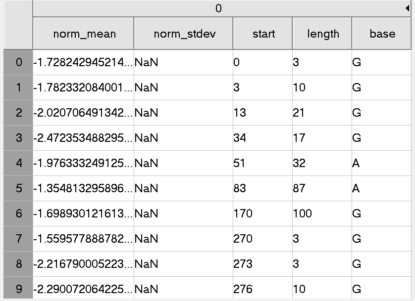

cDNA analysis workflow
Data preprocessing
Data description
cDNA data
This is data shared by Mike and downloaded on 22 Mar 2019. The dataset contains raw data, fastq’s and sequencing summary files.
It a Nanopore cDNA dataset with Sequin controls:
It’s 4 technicals replicates of a differentiated SHSY5Y sample with Sequin spike-ins.
2 samples have spike-in mix A, two mix B, which means there should be DE of the spike-ins. These are the V2 spike-ins.
All libraries were made from a pool of polyA+ RNA. Starting from 1ug of total RNA each.
Used cDNA-PCR kit (PCS108) with LWB001 barcodes 7-10
Basecalling with Albacore 2.2.6. Pass is Q7
Barcodes are:
LWB07 GTGTTACCGTGGGAATGAATCCTT
LWB08 TTCAGGGAACAAACCAAGTTACGT
LWB09 AACTAGGCACAGCGAGTCTTGGTT
LWB10 AAGCGTTGAAACCTTTGTCCTCTC
Note1: the Primer sequence around the barcode is unclear.
Note2: The Nanopore base caller may not trims off adaptor and barcode sequencers, so they are likely still on each read.
Sequin Genome
Last update (30/3/2019)
The resource bundle contains the following reference files:
rnasequin_decoychr_2.2.fa.gz - decoy chromosome (chrIS) sequence the encodes all synthetic sequin gene loci (3Mb).
rnasequin_annotation_2.2.gtf - annotation of sequin genes/isoforms on the decoy chromosome (120kb).
rnasequin_genesmix_2.2.tsv - expected concentration (expression) of each sequin gene in mixture (2kb).
rnasequin_isoforms_2.3.tsv - expected concentration (expression) of each sequin isoform in mixture (5kb).
rnasequin_sequences_2.2.fa(downloaded on 30/3/2019) - sequences of all sequin isoforms (213kb).
NOTE | Users chould add the decoy chromsome to their reference genome assembly (e.g. hg38) prior to building an alignment index. Reads derived from sequins will then align to the decoy chromosome.
NOTE | These resource files are used by anaquin by default, and are located internally (within the resources directory that should be located with the anaquin binary under a common parent directory). However, we provide them here for users that wish to modify these files for bespoke analysis. Users can then manually provide their own custom modified annotations and over-ride the default resource files.
Reads Mapping
To decrease the running time, only reads form barcode 7 have been processed, which is about a quarter of the total number.
The reads were mapped to rnasequin_sequences_2.2.fa using minimap2( version 2.11-r797) and bam file sorting using samtools (version samtools 1.9 Using htslib 1.9 Copyright (C) 2018 Genome Research Ltd.) Command:
minimap2 -ax map-ont -t 8 $REF_PATH $READS_PATH | samtools sort -o
reads-ref.sorted.bam -T reads.tmp
samtools index reads-ref.sorted.bamMapping Quality Selection
The reference file I used is the collection of all isoforms from Sequins. To make sure the mapped reads come from the isoform they mapped to, I sellected the reads with highest Map qualities, which are 60 in the result from minimap2. The python script has been pushed to github
Expected Sequencing
The basecalled suqences are subjuet to sequencing errors, but the actual sequences should be identical to the reference. I substituted the aligned range on each read with the corresponding sequence on reference. The start and end of each read are soft maskings, I kept it for a better alignment between the raw signal and basecalled read sequence. A .fasta file along with a python dictionary were created.
Structure
fasta:
> read ID
Expected seq
Dictionary:
Key: read ID
Value: Expected seqLocating the signal file.
The row data are organized by HDF5. The file name of each .fast5 file contains the channel ID and the # of read from that channel. However, it is not very straightforword to link each basecalled read with raw signal. Therefore, I built two dictionaries in python Source Code:
Structure: Key:
Read ID; Value: Fast5 file path There are two sequencing runs, so that two dictionaries are created
Squiggle alignment
Tombo resquiggle:
Function:
The re-squiggle algorithm defines a new assignment from squiggle to reference sequence, hence a re-squiggle.
Input:
FAST5 files (contaioning raw signal and associated base calls.)
Output:
The resquiggle command will add the mapped reference loacation and the raw seqeunce assignment to the .fast5 read files provided, as well as index file for more efficient file access.

# annotate raw FAST5s with FASTQ files produced from the same reads
# skip this step if raw read files already contain basecalls
tombo preprocess annotate_raw_with_fastqs --fast5-basedir <fast5s-base-directory> --fastq-filenames <reads.fastq>
tombo resquiggle <fast5s-base-directory> <reference-fasta> --processes 4 --num-most-common-errors 5